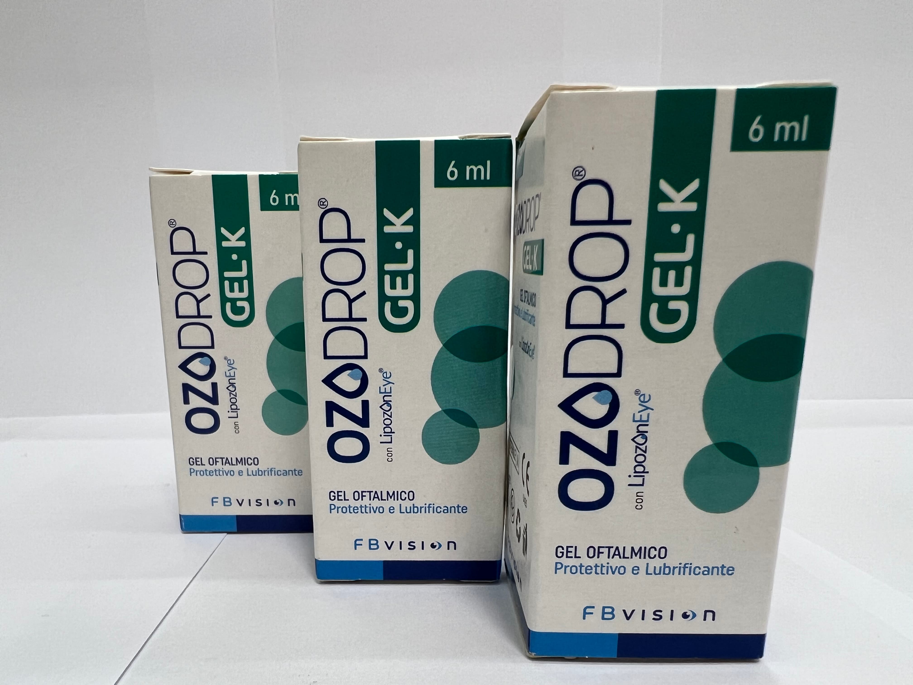

Контактна інформація:
Ціна: 1150 грн/уп.
В наявності
Виробник: Італія
Ціна: 1150 грн/уп.
В наявності
Саме в FarmItal ви можете купити гель Озодроп,Ozodrop в Україні, Гарантовано Якісний!
Доставка Ozodrop здійснюється транспортними компаніями, терміни виконання замовлення обумовлюються менеджером Фармітал. Ви можете замовити Озодроп у містах: Одеса, Херсон, Чернігів, Сєверодонецьк, Бердянськ, Бровари, Дніпро, Вінниця, Київ, Слов'янськ, Полтава, Краматорськ, Біла Церква, Кам'янське, Маріуполь, Чернівці, Олександрія, Кам'янець-Подільський, Львів, Запоріжжя, Кропивницький, Житомир, Івано-Франківськ, Суми, Черкаси, Костянтинівка, Мелітополь, Кривий Ріг, Рівне, Луцьк, Нікополь, Павлоград, Ужгород, Кременчук, Лисичанськ, Хмельницький, Тернопіль, Харків, Миколаїв, а також в інших населених пунктах України.
Гель-краплі для закапування в око - у флаконі 6ml
LipozonEye (озонована самоконсервована рослинна олія, соєві фосфоліпіди, гідроксиетилцелюлоза, борна кислота, натрію тетраборат, динатрію едетат натрію, PHMB, коліфор Р407, вода очищена.
Захисний, змащувальний, зволожуючий і заспокійливий офтальмологічний гель на основі LipozonEye (озонована рослинна олія, соєві фосфоліпіди), гідроксиетилцелюлози (HEC) і коліфору. Це корисно для лікування сухості очей, навіть за наявності подразнення, викликаного умовами навколишнього середовища або механічним впливом, наприклад, носіння контактних лінз. Наявність рослинної олії та ліпосом сприяє стабілізації ліпідної фази слізної плівки, зменшуючи випаровування водної фази та гарантуючи негайне полегшення.in vendita online su farmaciaguacci.it OZODROP GEL також має здатність утворювати стійку і однорідну плівку на поверхні рогівки.
Ozodrop - це змащувальний, захисний, зволожуючий і заспокійливий офтальмологічний гель на основі гіпромелози та озонованої рослинної олії.
Зберігати щільно закритими при температурі від 5°C до 25°C. Тримайте подалі від джерел тепла.Не використовуйте продукт після закінчення терміну придатності.Термін дії після відкриття: 30 днів.